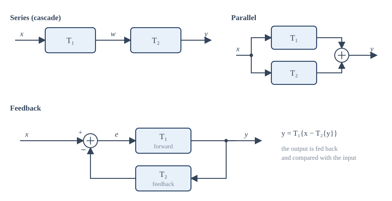
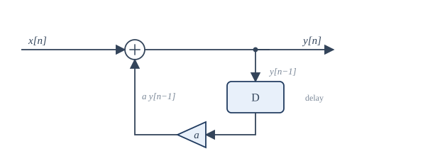

Chapter 3: Systems and Their Properties¶
Memory, causality, stability, invertibility, time invariance and linearity, and how to test for each
Learning outcomes
After this chapter you should be able to:
- describe a system by an input-output rule, a block diagram, or a differential or difference equation;
- combine systems in series, in parallel and with feedback;
- decide whether a given system is memoryless, causal, BIBO stable, invertible, time-invariant and linear, giving a proof or a counterexample;
- compute the output of a simple recursive difference equation by iteration from rest.
3.1 What a system is¶
A system transforms an input signal \(x\) into an output signal \(y\). We write
where \(T\) stands for the rule. The notation is a little loose: \(T\{x(t)\}\) means "apply \(T\) to the whole signal \(x\), then read the result at time \(t\)". The output at one instant may depend on the input at many instants.
A continuous-time system has CT input and output: an electric circuit, a mechanical suspension, a loudspeaker. A discrete-time system has DT input and output: a program that processes a list of samples. Mixed systems exist too: a sampler takes a CT input and produces a DT output, and Chapter 9 studies it.
Systems are described in several ways, and a skilled engineer moves between them easily:
- by an explicit formula, such as \(y(t) = x(t - 2)\) or \(y[n] = \frac{1}{3}(x[n] + x[n-1] + x[n-2])\);
- by a differential equation (CT) or difference equation (DT) that relates the output and its derivatives or past values to the input, such as \(RC\,\frac{dy}{dt} + y = x\);
- by a block diagram made of simple parts: gains, adders, integrators, delays;
- by the response to one special input, the impulse, from which (for the systems of Chapter 4) everything else follows;
- by a frequency response or a transfer function (Chapters 5 to 12).
Some simple systems recur so often that they deserve names. The identity \(y = x\). The ideal delay \(y(t) = x(t - t_0)\) or \(y[n] = x[n - n_0]\). The amplifier \(y = Kx\). The integrator \(y(t) = \int_{-\infty}^{t} x(\tau)\,d\tau\) and its discrete partner the accumulator \(y[n] = \sum_{k=-\infty}^{n} x[k]\). The differentiator \(y = dx/dt\) and the first difference \(y[n] = x[n] - x[n-1]\). The moving average \(y[n] = \frac{1}{M}\sum_{k=0}^{M-1}x[n-k]\).
3.2 Interconnections of systems¶
Large systems are built from small ones joined in three standard ways (Figure 3.1).

- Series (or cascade): the output of \(T_1\) is the input of \(T_2\), so \(y = T_2\{T_1\{x\}\}\). A microphone preamplifier followed by an equaliser.
- Parallel: the same input drives both systems and their outputs are added, \(y = T_1\{x\} + T_2\{x\}\). A loudspeaker crossover splits the signal into bass and treble paths.
- Feedback: the output is passed back through \(T_2\) and subtracted from the input, so that \(T_1\) acts on the error \(e = x - T_2\{y\}\). Feedback is the basis of control: a thermostat compares the room temperature with the setting and drives the heater with the difference.
In general the order of a series connection matters: \(T_2\{T_1\{x\}\}\) need not equal \(T_1\{T_2\{x\}\}\). For instance, squaring and then adding 1 gives \(x^2 + 1\); adding 1 and then squaring gives \((x+1)^2\). Chapter 4 shows that for linear time-invariant systems the order does not matter, a fact used constantly in practice.
3.3 Memory¶
A system is memoryless (or static) if the output at each time depends only on the input at the same time. Otherwise it has memory (it is dynamic).
- \(y(t) = 3x(t)\), \(y(t) = x^2(t)\) and \(y[n] = \cos(x[n])\) are memoryless.
- \(y[n] = x[n-1]\), \(y(t) = \int_{-\infty}^{t}x(\tau)\,d\tau\) and \(y[n] = x[n] + x[n+1]\) have memory.
A resistor is memoryless: its current depends on the present voltage. A capacitor has memory: its voltage depends on all the current that has flowed into it in the past. A system with memory needs some kind of storage, physical (charge on a capacitor, the position of a mass) or digital (a delay register).
3.4 Causality¶
A system is causal if the output at any time depends only on the input at the present time and in the past, never in the future. Equivalently, if two inputs agree up to time \(t_0\), the outputs of a causal system also agree up to time \(t_0\).
- \(y[n] = x[n] - x[n-1]\) is causal.
- \(y[n] = x[n+1] - x[n]\) is not causal: to compute \(y[0]\) we need \(x[1]\).
- \(y(t) = x(-t)\) is not causal: \(y(-2) = x(2)\) depends on the future. (For \(t > 0\) it uses the past, but one counterexample is enough.)
- \(y(t) = x(t)\cos(t+1)\) is causal: the factor \(\cos(t+1)\) is not the input, just a known function of time.
- Every memoryless system is causal.
Physical systems that work in real time are causal: no circuit can respond to a voltage before it is applied. Non-causal systems are still useful when the whole signal is recorded before processing, as when smoothing yesterday's measurements or processing a photograph, where the "independent variable" is position and has no past or future.
3.5 Stability¶
Many definitions of stability exist. The one used for signals and systems is bounded-input, bounded-output (BIBO) stability: a system is BIBO stable if every bounded input produces a bounded output. In symbols, if \(|x(t)| \le B_x < \infty\) for all \(t\), then there must be a finite \(B_y\) with \(|y(t)| \le B_y\) for all \(t\).
To prove stability, assume a bound on the input and derive one on the output. To disprove it, find one bounded input whose output is unbounded.
Example 3.1 Testing stability
(a) \(y[n] = \frac{1}{3}(x[n] + x[n-1] + x[n-2])\). If \(|x[n]| \le B\) then \(|y[n]| \le \frac{1}{3}(B + B + B) = B\). Stable.
(b) The accumulator \(y[n] = \sum_{k=-\infty}^{n}x[k]\). Take the bounded input \(x[n] = u[n]\). The output is \(y[n] = (n+1)u[n]\), which grows without limit. Unstable.
(c) \(y(t) = e^{x(t)}\). If \(|x(t)| \le B\) then \(|y(t)| \le e^{B}\). Stable, although nonlinear.
(d) \(y(t) = t\,x(t)\). The bounded input \(x(t) = 1\) gives \(y(t) = t\), unbounded. Unstable.
Stable is not the same as 'output usually bounded'
The integrator gives a bounded output for many inputs, such as a short pulse. That does not make it stable. BIBO stability demands a bounded output for every bounded input, so a single bad input (here the step) settles the question.
3.6 Invertibility¶
A system is invertible if distinct inputs always give distinct outputs. Then there is an inverse system \(T^{-1}\) that recovers the input: \(T^{-1}\{T\{x\}\} = x\).
- \(y(t) = 2x(t)\) is invertible; the inverse is \(x(t) = \frac{1}{2}y(t)\).
- The accumulator \(y[n] = \sum_{k\le n}x[k]\) is invertible; the inverse is the first difference \(x[n] = y[n] - y[n-1]\).
- \(y(t) = x^2(t)\) is not invertible: \(x\) and \(-x\) give the same output.
- \(y[n] = x[2n]\) (decimation) is not invertible: the odd samples are lost.
- \(y(t) = 0\) for every input is not invertible.
Invertibility matters in communications, where a receiver tries to undo the distortion of the channel (equalisation), and in measurement, where an instrument's own response is removed from a recording (deconvolution).
3.7 Time invariance¶
A system is time-invariant if delaying the input simply delays the output by the same amount, and changes nothing else. A resistor behaves the same today and tomorrow; a battery that is running down does not.
Formally: let \(y(t) = T\{x(t)\}\). Feed the system the delayed input \(x_1(t) = x(t - t_0)\) and call its response \(y_1(t)\). The system is time-invariant if, for every input and every \(t_0\),
The test has three steps, and it pays to write them out every time:
- Compute the response \(y_1\) to the shifted input \(x(t - t_0)\): substitute \(x(t - t_0)\) for every occurrence of the input, but leave the explicit \(t\) alone.
- Compute the shifted output \(y(t - t_0)\): replace every \(t\) in the formula for \(y(t)\) by \(t - t_0\).
- Compare.
Example 3.2 Testing time invariance
(a) \(y(t) = \sin(x(t))\). Step 1: \(y_1(t) = \sin(x(t - t_0))\). Step 2: \(y(t - t_0) = \sin(x(t - t_0))\). Equal: time-invariant.
(b) \(y[n] = n\,x[n]\). Step 1: \(y_1[n] = n\,x[n - n_0]\). Step 2: \(y[n - n_0] = (n - n_0)\,x[n - n_0]\). Different: time-varying. The gain \(n\) grows with time, so the same input applied later is amplified more.
(c) \(y(t) = x(2t)\). Step 1: the input \(x_1(t) = x(t - t_0)\) gives \(y_1(t) = x_1(2t) = x(2t - t_0)\). Step 2: \(y(t - t_0) = x(2(t - t_0)) = x(2t - 2t_0)\). Different: time-varying. A compressor squeezes delays as well as the signal.
(d) \(y(t) = x(-t)\). Step 1: \(y_1(t) = x_1(-t) = x(-t - t_0)\). Step 2: \(y(t - t_0) = x(-(t - t_0)) = x(-t + t_0)\). Different: time-varying. Reflection turns a delay into an advance.
Cases (c) and (d) catch many students. In step 1 the new input \(x_1\) replaces the old one, and the system's rule ("evaluate the input at \(2t\)") is then applied to \(x_1\): \(x_1(2t) = x(2t - t_0)\), not \(x(2(t - t_0))\).
A useful shortcut: a system is time-varying if time appears explicitly in its formula outside the argument of the input (as the \(n\) in \(n\,x[n]\) or the \(\cos t\) in \(x(t)\cos t\)), or if the argument of the input is anything other than \(t\) minus a constant (as in \(x(2t)\), \(x(-t)\), \(x(t^2)\)).
3.8 Linearity¶
A system is linear if it obeys the principle of superposition: the response to a weighted sum of inputs is the same weighted sum of the individual responses. If \(x_1 \mapsto y_1\) and \(x_2 \mapsto y_2\), then for all constants \(a\) and \(b\)
The condition combines two simpler ones: additivity (\(x_1 + x_2 \mapsto y_1 + y_2\)) and homogeneity or scaling (\(a x_1 \mapsto a y_1\)). Linearity is the property that makes analysis possible: if we can split a complicated input into simple pieces whose responses we know, we can add the responses.
A quick necessary condition follows from homogeneity with \(a = 0\): a linear system must give zero output for zero input. If the zero input gives a non-zero output, the system is not linear.
Example 3.3 Testing linearity
(a) \(y[n] = n\,x[n]\). The input \(a x_1 + b x_2\) gives \(n(a x_1[n] + b x_2[n]) = a\,n x_1[n] + b\,n x_2[n] = a y_1 + b y_2\). Linear (though time-varying).
(b) \(y(t) = x^2(t)\). The input \(a x_1\) gives \(a^2x_1^2 \ne a\,x_1^2\) in general. Nonlinear.
(c) \(y[n] = 2x[n] + 3\). Zero input gives \(y = 3 \ne 0\). Nonlinear. Such a system is called incrementally linear: the difference between two outputs depends linearly on the difference between the inputs. It is a linear system plus a constant offset.
(d) \(y(t) = \mathrm{Re}\{x(t)\}\) for complex inputs. Additive, but scaling by \(a = j\) fails: the input \(jx\) with \(x = 1\) gives \(\mathrm{Re}\{j\} = 0\), while \(j\,\mathrm{Re}\{1\} = j\). Nonlinear over complex inputs. Additivity alone is not enough.
Linearity and initial conditions¶
A circuit with a charged capacitor gives an output even when its input is zero. Is it linear? By the strict test above, no. The standard way out is to split the output of such a system into two parts: the zero-input response, due to the initial stored energy alone, and the zero-state response, due to the input with all initial conditions zero. Each part is linear in its own cause. Throughout most of this book we assume that systems are initially at rest: no stored energy before the input starts. Then the output is the zero-state response and the system is linear in the strict sense.
3.9 Summary table of properties¶
The table classifies the systems used as examples in this chapter. Check a few entries yourself before reading on.
| System | Memoryless | Causal | Stable | Time-invariant | Linear |
|---|---|---|---|---|---|
| \(y(t) = 5x(t)\) | yes | yes | yes | yes | yes |
| \(y[n] = x[n-1]\) | no | yes | yes | yes | yes |
| \(y[n] = x[n+1]\) | no | no | yes | yes | yes |
| \(y[n] = \frac13(x[n] + x[n-1] + x[n-2])\) | no | yes | yes | yes | yes |
| \(y[n] = \sum_{k\le n}x[k]\) | no | yes | no | yes | yes |
| \(y[n] = n\,x[n]\) | yes | yes | no | no | yes |
| \(y(t) = x^2(t)\) | yes | yes | yes | yes | no |
| \(y[n] = 2x[n] + 3\) | yes | yes | yes | yes | no |
| \(y(t) = x(2t)\) | no | no | yes | no | yes |
| \(y(t) = x(-t)\) | no | no | yes | no | yes |
Table 3.1. Properties of the example systems.
Systems that are both linear and time-invariant (LTI) occupy the rest of this book. They are not the only systems that matter, but they are the ones for which a complete theory exists, and many real systems are LTI to a good approximation over their normal range of operation.
3.10 Systems described by differential and difference equations¶
Most physical LTI systems are described by linear constant-coefficient differential equations. A resistor \(R\) in series with a capacitor \(C\), driven by a voltage \(x(t)\), has a capacitor voltage \(y(t)\) satisfying
The general form for a CT system of order \(N\) is
The DT counterpart is the linear constant-coefficient difference equation
An equation alone does not fix the output: we also need auxiliary conditions, such as the initial values of the output. With the condition of initial rest (if \(x\) is zero before some time, so is \(y\)) such a system is linear, time-invariant and causal. Chapters 10 and 11 solve these equations systematically with the Laplace and z-transforms; here we look at the discrete case, which can be solved by plain arithmetic.
Solving a difference equation by iteration¶
A difference equation with \(a_0 \ne 0\) can be rearranged to give the present output in terms of past outputs and inputs:
A system that uses past outputs is called recursive. Given the input and the starting values, we can compute \(y[0], y[1], y[2], \ldots\) one after another. This is exactly how a digital filter runs on a processor.

Example 3.4 Impulse response by iteration
Find the output of \(y[n] = x[n] + 0.5\,y[n-1]\) for \(x[n] = \delta[n]\), with the system initially at rest (\(y[n] = 0\) for \(n < 0\)).
| \(n\) | \(x[n]\) | \(0.5\,y[n-1]\) | \(y[n]\) |
|---|---|---|---|
| 0 | 1 | 0 | 1 |
| 1 | 0 | 0.5 | 0.5 |
| 2 | 0 | 0.25 | 0.25 |
| 3 | 0 | 0.125 | 0.125 |
Table 3.2. Iterating the recursion.
The pattern is \(y[n] = (0.5)^n u[n]\). A single input sample produces an output that lasts forever, decaying geometrically. Such a system is said to have an infinite impulse response (IIR). The moving average, by contrast, has a finite impulse response (FIR): its response to \(\delta[n]\) is \(\frac13\) for \(n = 0, 1, 2\) and zero afterwards.
If the coefficient were 2 instead of 0.5, the response would be \(2^n u[n]\), which grows without bound: the system would be unstable. The size of the feedback coefficient decides stability, a theme that returns with the poles of Chapters 10 and 11.
3.11 Testing properties numerically¶
A computer cannot prove that a system is linear (that needs algebra), but it can quickly find a counterexample. The program below feeds random inputs to four systems and checks superposition and time invariance.
import numpy as np
rng = np.random.default_rng(1)
L = 50
n = np.arange(L)
def delay(x, k):
"""Delay a finite sequence by k samples, filling with zeros."""
return np.concatenate([np.zeros(k), x[:-k]])
systems = {
"y[n] = x[n] + x[n-1]": lambda x: x + delay(x, 1),
"y[n] = n x[n]": lambda x: n * x,
"y[n] = x[n]^2": lambda x: x ** 2,
"y[n] = 2 x[n] + 3": lambda x: 2 * x + 3,
}
for name, T in systems.items():
x1, x2 = rng.standard_normal(L), rng.standard_normal(L)
x1[:5] = x2[:5] = 0 # start at rest so that delays are clean
a, b = 2.0, -0.7
linear = np.allclose(T(a * x1 + b * x2), a * T(x1) + b * T(x2))
k = 3
tinv = np.allclose(T(delay(x1, k))[k:], delay(T(x1), k)[k:])
print(f"{name:22s} linear: {str(linear):5s} time-invariant: {tinv}")
y[n] = x[n] + x[n-1] linear: True time-invariant: True
y[n] = n x[n] linear: True time-invariant: False
y[n] = x[n]^2 linear: False time-invariant: True
y[n] = 2 x[n] + 3 linear: False time-invariant: True
The results agree with Table 3.1. A "True" here means only that one random test passed; a "False" is a genuine counterexample.
3.12 Summary¶
Summary
- A system maps an input signal to an output signal. It can be given by a formula, a differential or difference equation, a block diagram or (for LTI systems) its impulse or frequency response.
- Systems combine in series, parallel and feedback.
- Memoryless: output depends only on the present input. Causal: output never depends on future inputs. BIBO stable: every bounded input gives a bounded output. Invertible: distinct inputs give distinct outputs.
- Time-invariant: a delayed input gives an equally delayed output. Test by comparing the response to \(x(t - t_0)\) with \(y(t - t_0)\). Explicit time factors, compression and reflection break time invariance.
- Linear: superposition holds. Zero input must give zero output. A system with an offset is incrementally linear, not linear.
- Linear constant-coefficient differential and difference equations with initial rest describe causal LTI systems. Recursive difference equations can be solved by iteration; their impulse response may last forever (IIR).
3.13 Exercises¶
Exercise 3.1
Is \(y[n] = x[n] + x[n - 2]\) memoryless? causal? stable?
Answer
It has memory (uses \(x[n-2]\)), it is causal (no future values) and it is stable (\(|y| \le 2B\)).
Exercise 3.2
Is \(y(t) = x(t/3)\) causal?
Answer
No. For negative \(t\), \(t/3 > t\); for example \(y(-3) = x(-1)\), a later value of the input. (For \(t > 0\) it uses past values, but one counterexample settles it.)
Exercise 3.3
Show that \(y(t) = x(t)\cos(\omega_c t)\) (a modulator) is linear but time-varying.
Answer
Linear: \((a x_1 + b x_2)\cos\omega_c t = a\,x_1\cos\omega_c t + b\,x_2\cos\omega_c t\). Time-varying: the response to \(x(t - t_0)\) is \(x(t - t_0)\cos\omega_c t\), but \(y(t - t_0) = x(t - t_0)\cos(\omega_c(t - t_0))\); these differ in general.
Exercise 3.4
Is \(y[n] = x[n]\,x[n-1]\) linear? time-invariant?
Answer
Nonlinear: doubling the input quadruples the output. Time-invariant: the response to \(x[n - n_0]\) is \(x[n - n_0]x[n - n_0 - 1] = y[n - n_0]\).
Exercise 3.5
Is \(y(t) = \int_{t-1}^{t} x(\tau)\,d\tau\) stable? Is it causal?
Answer
Stable: if \(|x| \le B\) then \(|y| \le \int_{t-1}^{t}B\,d\tau = B\). Causal: it uses the input only over the last second, up to the present.
Exercise 3.6
Find the inverse of the system \(y[n] = x[n] - 0.5\,x[n-1]\) in the form of a recursive equation.
Answer
Solve for \(x\): \(x[n] = y[n] + 0.5\,x[n-1]\). The inverse system takes \(y\) as input and produces \(x\) recursively. (Its impulse response is \((0.5)^n u[n]\), which is the system of Example 3.4.)
Exercise 3.7
Iterate \(y[n] = x[n] - 0.8\,y[n-1]\) from rest for \(x[n] = \delta[n]\), for \(n = 0, \ldots, 3\), and give the general term.
Answer
\(y[0] = 1\), \(y[1] = -0.8\), \(y[2] = 0.64\), \(y[3] = -0.512\). In general \(y[n] = (-0.8)^n u[n]\): a decaying, alternating response.
Exercise 3.8
Find the step response (the output for \(x[n] = u[n]\)) of \(y[n] = x[n] + 0.5\,y[n-1]\), from rest, for \(n = 0, 1, 2, 3\), and its limit as \(n \to \infty\).
Answer
\(y[0] = 1\), \(y[1] = 1.5\), \(y[2] = 1.75\), \(y[3] = 1.875\). In general \(y[n] = 2 - (0.5)^n\), which tends to 2. In steady state \(y = 1 + 0.5y\), so \(y = 2\).
Exercise 3.9
Two systems are each linear. Show that their series connection is linear.
Answer
\(T_2\{T_1\{a x_1 + b x_2\}\} = T_2\{a T_1\{x_1\} + b T_1\{x_2\}\} = a T_2\{T_1\{x_1\}\} + b T_2\{T_1\{x_2\}\}\), using the linearity of \(T_1\) and then of \(T_2\).
Exercise 3.10
Is the system \(y(t) = x(t) + 1\) invertible? Is it linear?
Answer
Invertible, with inverse \(x(t) = y(t) - 1\). Not linear: zero input gives output 1. It is incrementally linear.
3.14 Quiz¶
Check your understanding of Chapter 3
Exercise 1
Which system is time-varying?
- y(t) = 3x(t − 1)
- y(t) = x(t)²
- y(t) = t x(t)
- y(t) = dx/dt
Answer
y(t) = t x(t)
The explicit factor t changes the gain over time.
Exercise 2
Which system is not BIBO stable?
- y[n] = x[n] − x[n−1]
- the accumulator y[n] = Σ x[k] for k ≤ n
- y(t) = e^(x(t))
- y(t) = cos(x(t))
Answer
the accumulator y[n] = Σ x[k] for k ≤ n
A unit step input gives a ramp output, which is unbounded.
Exercise 3
A system gives output 3 when the input is identically zero. It must be
- nonlinear
- non-causal
- unstable
- time-varying
Answer
nonlinear
A linear system maps zero input to zero output.
Exercise 4
y(t) = x(2t) is
- linear and time-invariant
- linear and time-varying
- nonlinear and time-invariant
- nonlinear and time-varying
Answer
linear and time-varying
Exercise 5
From rest, iterate y[n] = x[n] + 0.5 y[n−1] with x[n] = δ[n]. What is y[3]?
Answer
0.125 / 1/8
Exercise 6
A system whose output never depends on future input values is called ___.
Answer
causal
Exercise 7
Match each system with its inverse.
| A | B |
|---|---|
| y = 4x | first difference |
| accumulator | x(t) = y(t + 2) |
| y(t) = x(t − 2) | x = y/4 |
Answer
y = 4x — x = y/4; accumulator — first difference; y(t) = x(t − 2) — x(t) = y(t + 2)